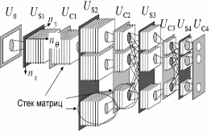
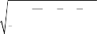
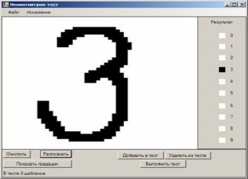
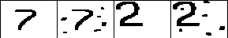

О.И.Федяев1, Ю.С.Махно2
Разработана программная модель искусственной нейронной сети типа неокогнитрон для распознавания графических образов при наличии различного вида искажений. Рассмотрен алгоритм обучения и особенности функционирования неокогнитрона, отмечены его достоинства и недостатки при распознавании образов, подверженных искажениям.
Не снижающийся интерес к задачам распознавания обусловлен необходимостью автоматизации как функций контроля и управления сложными динамическими объектами в реальном времени, так и образных процессов коммуникации (визуальных, речевых) в интеллектуальных системах. Поэтому до сих пор продолжается поиск и реализация эффективных принципов передачи распознавательной функции человека компьютеризированным системам. Одно из перспективных направлений решения данной проблемы основано на применении нейрокомпьютеров, как наиболее адекватных классу трудно формализуемых задач распознавания образов. В настоящее время предложено большое количество нейросетевых парадигм для решения задач распознавания образов. Значительные затруднения при распознавании вызывают образы, подверженные какому-либо искажению (зашумлению, смещению, повороту, изменению образа в размерах).
Перспективу в преодолении этих трудностей связывают с применением новой нейросетевой парадигмы – модели неокогнитрона, использующей качественно новую архитектуру и неконтролируемое обучение [Fukushima, 1980, Уоссермен, 1992, Федяев, 2002, 2003]. В основу архитектуры неокогнитрона положена организация зрительной системы человека. Первая (классическая) модель неокогнитрона была

1 Украина, 83000, Донецк, ул. Артёма 58, ДонНТУ, fedyaev@r5.dgtu.donetsk.ua
2 Украина, 83000, Донецк, ул. Артёма 58, ДонНТУ, ymakhno@gmail.com
разработана в 1980 г. К.Фукушимой [Fukushima, 1980] и являлась дальнейшим развитием нейросети типа когнитрон.
В данной работе рассматривается усовершенствованная модель неокогнитрона – R-неокогнитрон (от англ. Rotation – вращение, поворот). Данная модель отличается от классической модели неокогнитрона своей возможностью распознавать образы с учётом их поворота [Федяев, 2002]. С помощью созданной программной модели R-неокогнитрона проведен анализ процесса обучения и распознавания графических образов.
Неокогнитрон является иерархической многослойной нейронной сетью с неполными последовательными связями [Fukushima, 1980, Fausett, 2000, Федяев, 2002]. Модель неокогнитрона была разработана после того, как в зрительной системе человека были обнаружены узлы, реагирующие только на простые элементы: линии и углы определенной ориентации. На следующих уровнях зрительной системы есть узлы, которые реагируют уже на более сложные и абстрактные образы, такие, как окружности, треугольники и прямоугольники. На ещё более высоких уровнях степень абстракции возрастает до тех пор, пока не определятся узлы, реагирующие, например, на лица или другие сложные формы. Схематический принцип процесса распознавания R-неокогнитроном представлен на рис.1.

Рис. 1. Иерархическая структура R-неокогнитрона
Каждый слой неокогнитрона состоит из стеков матриц. Каждая плоскость в конкретном стеке матриц отвечает за определённый угол поворота образа, закреплённого за данным стеком. Количество плоскостей зависит от необходимой точности в определении развёрнутых образов. Все матрицы одного слоя имеют одинаковую размерность. От слоя к слою размерность матриц уменьшается либо остается прежней [Fausett, 2000]. Элементами матриц являются отдельные нейроны. Все нейроны в каждой
матрице реагируют на один и тот же образ. То есть, каждый из них настраивается на один специфический входной образ (шаблон).
В неокогнитроне выделяют два типа слоёв: «простые» (S-слои, от слова simple) и «комплексные» (C-слои, от слова complex), которые состоят соответственно из «простых матриц» (распознают входную информацию) и «комплексных матриц» (обобщают распознанную информацию). Каждый нейрон как простого, так и комплексного слоя получает сигналы не от всех нейронов, а лишь от некоторых, с которыми он связан. Такие нейроны образуют «область видимости» [Satoh, 1998, Fausett, 2000].
При определении математической модели неокогнитрона для каждого нейрона простой матрицы вводится дополнительный тормозящий (или подавляющий) нейрон v. На тормозящий нейрон возлагается функция подавления выходного сигнала нейрона при несоответствии входного образа образу, на распознавание которого настроен нейрон. Подавляющий нейрон связан с нейроном простого слоя и с теми же нейронами комплексного слоя, с которыми связан сам простой нейрон.
Для математического описания модели введём два вектора. Вектор n
задает положение нейрона в стеке матриц (рис.1):

n (nx , ny , n ) . (1.1)
Вектор k задаёт смещение координат нейрона относительно рассматриваемого нейрона (вектор n) в стеке матриц предыдущего слоя. Он также имеет 3 координаты:

k (kx , ky , k ) . (1.2)
Между этими двумя векторами определим оператор
образом:
следующим
M
nx kx nx kx
M
ny ky ny ky
M
(1.3)
M
n k (n k ) mod M
Обозначим через параметры Tc и Ts количество матриц в стеках матриц предыдущего слоя. С помощью множества A определим все нейроны, входящие в область видимости рассматриваемого нейрона. Это множество состоит из трёхмерных векторов, каждый из которых задаёт относительное смещение нейрона области видимости от вектора n.
Для расчёта выходного сигнала подавляющего нейрона используется следующая формула:
v(n)

kA
t(k )[c(n k)]2
Tc
, (1.4)
где с – выходные сигналы нейронов предыдущего комплексного слоя; t –
весовые коэффициенты от нейронов С-слоя к подавляющему нейрону.
Сигнал, подаваемый на вход простого нейрона, вычисляется по формуле:


1 c(n k) w(k )

x(n)
kA Tc
1 , (1.5)
1 v(n) wv
где w – настраиваемые коэффициенты; v – выходной сигнал подавляющего нейрона (1.4).
Функция активации нейронов простого слоя имеет вид:
0,иначе
S(x) x, x 0 , (1.6)
Входной сигнал для нейронов комплексного слоя вычисляется по формуле:


y(n) s(n k )u(k ) , (1.7)

kA Ts
где s – выходной сигнал простых нейронов; u – весовые коэффициенты от простых нейронов к комплексному нейрону [Fausett, 2000].
Для нейронов комплексных слоёв использовались различные функции активации.
Для обучения неокогнитрона применялась стратегия «обучение без учителя». Настраиваемыми коэффициентами выступали коэффициенты от нейронов комплексного слоя к нейронам простого слоя и коэффициент от подавляющего нейрона к нейрону простого слоя. Коэффициенты от комплексных нейронов к подавляющему нейрону и от простых нейронов к комплексным являются фиксированными. Предполагается, что значения этих коэффициентов должны уменьшаться с удалением от центра области видимости.
При настройке весовых коэффициентов использовалась общепринятая схема расчёта параметра Δ, зависящего от величины входных сигналов [Satoh, 1998, Fausett, 2000]. В итоге применялись следующие формулы корректировки коэффициентов для нейрона заданного вектором n:
w(k ) t (k )c(n k );
Tc

w (m1) (k ) w( m) (k ) w(k )
где α – коэффициент скорости обучения.
(2.1)
Величина Δ для весового коэффициента подавляющего нейрона ν определялась так, чтобы процесс обучения мог завершиться. Поскольку нет единого мнения по поводу наиболее подходящей формулы для расчёта Δ, то оценивались следующие два возможных способа.
Первый способ основывается на формуле
wv c(n mid ) , где
Tc
mid – вектор смещений координат центрального нейрона области видимости относительно подавляющего нейрона (n) [Fausett, 2000].
v
Второй способ основывается на формуле wv 2 [Satoh, 1998]. В
этом случае величина Δ зависит от выхода тормозящего нейрона, а сам выход тормозящего нейрона зависит от всех нейронов предыдущего слоя, с которыми связан обучаемый нейрон. В программной модели применялся второй способ из-за его универсальности.
Обучение неокогнитрона происходит слой за слоем. При обучении нейронов использовался метод, при котором в каждой матрице обучается только один нейрон (обычно используется центральный нейрон). Критерий завершения обучения простого нейрона имеет следующий вид:
| x(n)(k1) x(n)(k) | eps , (2.2) где eps – заданное пороговое число. После завершения обучения значения весовых коэффициентов этого нейрона распространяются на все остальные нейроны в этой матрице [Fausett, 2000].
Для обучения нейронов первого слоя шаблон обучения (типовой фрагмент распознаваемого образа) записывается на входном слое. Затем начинается обучение центрального нейрона очередной матрицы. После того, как матрицы первого слоя подобным образом будут настроены на распознавание всего заданного набора шаблонов, переходят к обучению второго слоя.
Для исследования процессов обучения и распознавания была разработана программная модель, эмулирующая работу нейронной сети типа R-неокогнитрон на персональном компьютере со следующими характеристиками: процессор Intel Core 2 Duo E6750 с тактовой частотой
2,66 GHz; оперативная память 2 Gb; операционная система Windows XP Professional.
Главная форма программы-эмулятора представлена на рис. 2.

Рис. 2. Окно программного эмулятора R-неокогнитрона
Архитектура R-неокогнитрона определялась следующими параметрами: число слоёв – 4; количество стеков матриц в слое S1 – 16, слое S2 – 26, слое S3 – 78, слое S4 – 42, слое С1 – 12, слое С2 – 26, слое С3 – 54, слое С4 – 10.
Для обучения неокогнитрона распознаванию рукописных арабских цифр использовались шаблоны обучения из открытой базы данных ETL-1 [Satoh, 1998, ETL-1]. Обучающее множество включало в себя 500 графических образов (по 50 образов для каждой цифры).
Анализ процесса распознавания был проведен на классах образов, обеспечивающих проверку чувствительности неокогнитрона к следующим искажениям: изменению масштаба; изменению местоположения; присутствию хаотических шумов; повороту исходного образа; наложению образов. Тестовое множество состояло из 400 образов.
При изменении масштаба (рис.3) точность распознавания составила 92%. Ошибки в распознавании происходили в основном при сильном уменьшении масштаба.
Рис. 3. Распознавание при изменении масштаба
Неокогнитрон является нейронной сетью, нечувствительной к местоположению образов (рис.4). Это было подтверждено результатами моделирования. Неокогнитрон показал 100% распознаваемость на предложенных образах.
Рис. 4. Распознавание при изменении местоположения
Отличные характеристики неокогнитрон показал и при наложении случайных шумов (рис.5). Были правильно распознаны 94% образов. Ошибки возникали лишь в случаях заполнения случайными шумами более 20% всей рабочей области.

Рис. 5. Распознавание при добавлении хаотических шумов
Данная модель неокогнитрона также позволяет распознавать образы, повернутые не более чем на 70 градусов от своего исходного положения (рис.6). При повороте образов неокогнитрон показал результат распознавания, равный 79%.
Рис. 6. Распознавание при повороте исходного образа
Одним из недостатков неокогнитрона является то, что он неправильно реагирует на образы, которые были получены путём наложения одного образа на другой.
Как показало моделирование, точность распознавания значительно зависит от состава обучающего множества и параметров процесса обучения. Как было описано выше, для обучения тормозящего нейрона можно использовать два способа. В табл. 1 представлена зависимость качества распознавания от выбранного способа обучения тормозящего нейрона.
Скорость обучения, которая определяется параметром α, имеет особую важность при обучении неокогнитрона на большом количестве образов. В табл. 2 представлена зависимость скорости обучения от значения
параметра α. Стоит заметить, что значение данного параметра не оказывает влияния на точность распознавания.
Табл. 1. Зависимость качества распознавания от выбранного способа обучения тормозящего нейрона
Способ обучения нейрона ν | Точность распознавания, % |
Способ 1 | 84 |
Способ 2 | 98 |
Табл. 2. Зависимость скорости обучения от значения параметра α
Параметр α | Время обучения,с |
0,05 | 94 |
0,10 | 91 |
0,25 | 102 |
0,50 | 129 |
В табл. 3 показано влияние мощности обучающего множества на точность работы системы распознавания. Обучающие образы из этого множества были неоднородными и охватывали характерные черты каждого из классов.
Табл. 3. Зависимость качества распознавания от мощности обучающего множества
Мощность обучающего множества | Точность распознавания, % |
100 | 90 |
200 | 93 |
300 | 96 |
400 | 97 |
500 | 98 |
Моделирование процессов обучения и распознавания на программной модели R-неокогнитрона показало перспективы (по сравнению с обычным неокогнитроном [Федяев, 2008]) распознавания графических образов в условиях различных видов помех, в том числе и при изменении ориентации распознаваемых образов. R-неокогнитрон можно рассматривать как систему индуцирования знаний из обучающего
множества графических данных посредством выделения типовых признаков и их обобщения на последующих уровнях.
Обобщая результаты исследований, отметим ряд свойств R- неокогнитрона, благодаря которым он превосходит другие нейронные сети, ориентированные на распознавание образов:
малая чувствительность к основным искажениям, которым подвергаются графические изображения (масштабирование, перенос, хаотические шумы);
способность распознавать двумерные графические образы, повёрнутые вокруг своей оси;
высокая скорость обучения и распознавания графических образов.
Вышеперечисленные качества R-неокогнитрона позволяют строить на его основе эффективные системы обработки образной информации в различных предметных областях: распознавание сигналов, идентификация графических изображений, управление с использованием средств визуального наблюдения за объектами.
// Труды 8-й Всероссийской конф. «Нейрокомпьютеры и их применение» (НКП-2002). – М.: Век книги, 2002. – С.1046-1052.